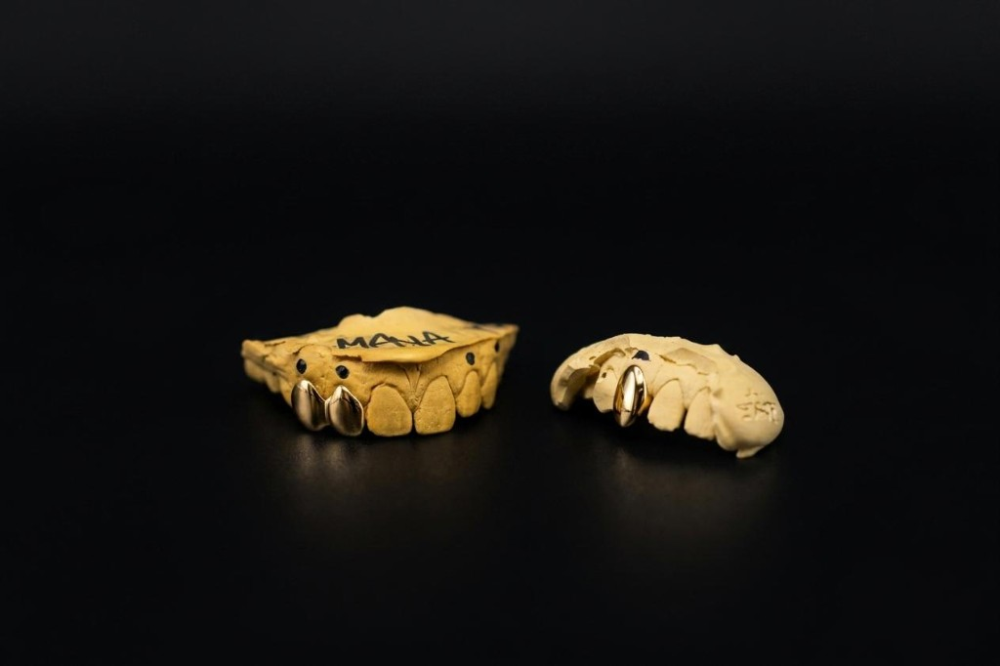
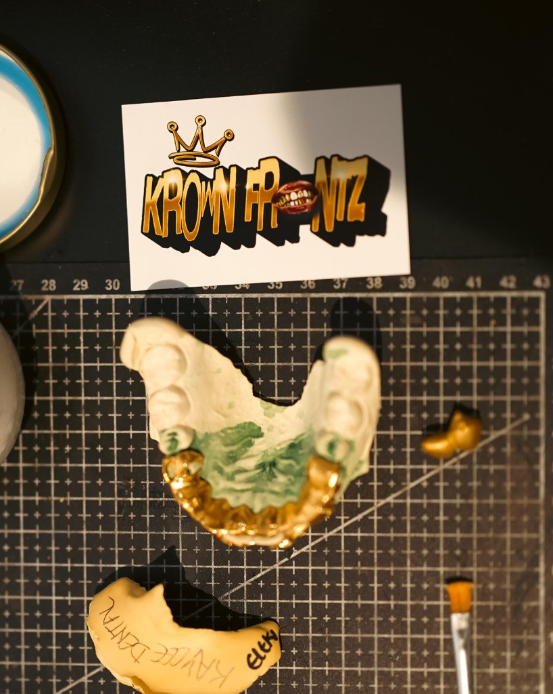
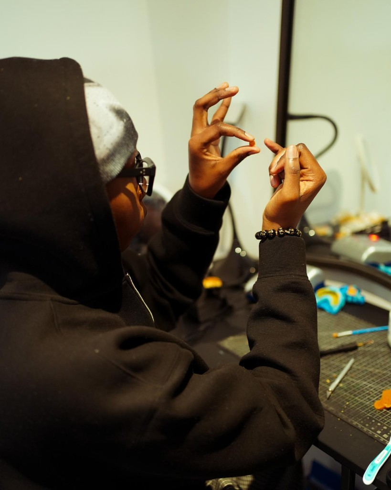

Krown Frontz Journey
Where It Started
Crazily enough, Krown Frontz started on the other side of the world!
In 2024 I moved to Hong Kong for a year as part of my university studies. I've always loved fashion and finding ways to express myself, through clothes, jewellery, accessories, etc, and during that year I got pulled into grillz. The history behind them as well as the aesthetic.
I love the look of grillz, and I wanted to learn how to actually make them. Hong Kong is where I spent most of my time figuring it out: experimenting, getting things wrong, trying again. I wasn't in a rush to turn it into a business because I wanted to get good first. By the time I came back to the UK, I'd spent months on the craft, and Krown Frontz had grown into something I actually wanted to build.

Why Krown Frontz?
The name is pretty literal, but it's got my own identity stamped on it.
Frontz comes from the grillz worn on your teeth, it'll be one of the first things people notice about you. Krown comes from crown, but I didn't want to just call it "Crown Frontz." Swapping the C for a K wasn't random either, my own name starts with a K, so it felt right to put a bit of myself into the spelling. That small change gave the name its own identity, and over time that K became something people recognise as ours. It's also why the crown has always been central to the logo. It's the symbol of this brand.
As the brand has grown, so has the logo. There's a small cross built into the crown now, bringing another part of who I am into it.

Your Krown, His Glory
I haven't included my faith in Krown Frontz just so I can say it's a "Christian brand." As my relationship with God has grown, its changed how I've thought about the business and about my own ability to create.
That's where "Your Krown, His Glory" comes from.
The Krown is what I make, it's the finished piece someone wears and has made theirs. But His Glory is the foundation beneath it all. It's the reminder that even though my name is on every piece, I don't want the brand to end with me nor glorify me. My ability to create, my ideas, the opportunities I've had to grow — all of it is something I want to give back to God because it all belongs to Him.

There's a visual in Revelation 4:10–11 I love to draw from. The elders are wearing crowns, and when they come before God, they take those crowns off and lay them at His throne, saying He's the one worthy of the glory.
That's what the phrase means to me. Wearing a Krown doesn't mean the glory belongs to us. You can still be creative, express yourself and take pride in what you wear. However, at the centre of this brand is where I want the glory to ultimately go.
Your Krown. His Glory.
Thank you for choosing Krown Frontz.